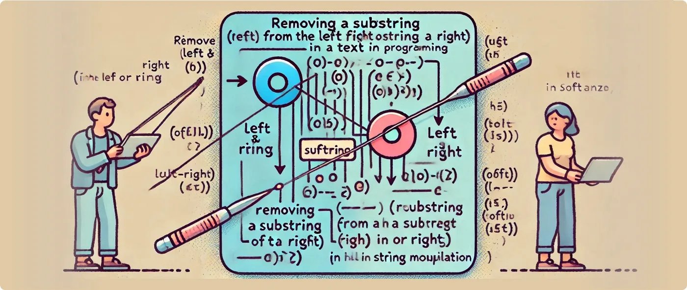

Simplifying Orientation in String Removal with Softanza
Run on 2026-10-02 21:02 inside the library at commit 0e72e2e2c, block after block in one process: 4 blocks printed what they promise; 1 raised an error. The file on GitHub(opens in a new tab)

In text manipulation, removing a substring from the left or right of a string is a common task, but it can quickly become tricky when handling languages with different orientations, such as Arabic. Softanza addresses this challenge by offering both specific and generalized solutions for managing string content seamlessly.
Traditional Approaches: Left and Right Removal
Softanza provides two straightforward functions to remove substrings:
RemoveFromLeft(): Removes a substring from the left side of the string.RemoveFromRight(): Removes a substring from the right side of the string.
For example:
load "stzlib.ring"
o1 = new stzString("let's say welcome to everyone!")
o1.RemoveFromLeft("let's say ")
? o1.Content()
#--> welcome to everyone!ran: printed what this block promises
This works well for languages like English, where text flows left to right. However, things get less intuitive with right-to-left (RTL) languages like Arabic.
The RTL Challenge: Left and Right Confusion
Consider an Arabic sentence:
o1 = new stzString("هذه الكلمات الّتي سوف تبقى")
? o1.NRightCharsXT(4)
#--> "هذه "ran: raised an error
Error (R14) : Calling Method without definition: nrightcharsxt
To remove the substring "هذه " (which appears visually at the start), you would use RemoveFromRight() instead of RemoveFromLeft(). Why? Because for an RTL string, ""right" corresponds to the start of the text, and "left" corresponds to the end.
o1.RemoveFromRight("هذه ")
? o1.Content() #--> "الكلمات الّتي سوف تبقى"ran: printed what this block promises
This reversal in directionality can cause confusion, especially for developers working with multilingual systems.
NOTE: The
XT()suffix, when appended to a Softanza function, signifies an eXTended outcome of the basic feature in question. For example, in the case ofo1.NRightCharsXT()shown above, the suffix forces the output to be a string rather than a list of characters. In other words: without XT, callingo1.NRightChars()produces the list[ "ه", "ذ", "ه", " " ]instead of the string"هذه ".
A Semantic Solution: Start and End Removal
To eliminate orientation-based complications, Softanza introduces two semantic alternatives:
RemoveFromStart(): Removes a substring from the logical start of the string, regardless of the text's orientation.RemoveFromEnd(): Removes a substring from the logical end.
Using these, the same task becomes simpler and more intuitive:
o1 = new stzString("let's say welcome to everyone!")
o1.RemoveFromStart("let's say ")
? o1.Content()
#--> welcome to everyone!ran: printed what this block promises
And for Arabic text:
o1 = new stzString("هذه الكلمات الّتي سوف تبقى")
o1.RemoveFromStart("هذه ")
? o1.Content() #--> "الكلمات الّتي سوف تبقى"ran: printed what this block promises
Why It Matters
The RemoveFromStart() and RemoveFromEnd() functions embody Softanza's commitment to semantic programming—designing functions that align with human logic rather than the technicalities of text representation.
Whether you're working with left-to-right English text or right-to-left Arabic, these functions provide:
- Clarity: No need to second-guess the directionality of your text.
- Consistency: The same code works for all orientations, reducing bugs in multilingual applications.
- Ease of Use: Developers can focus on their logic without worrying about the underlying mechanics of text rendering.
Conclusion
Softanza simplifies string manipulation for multilingual and bidirectional text environments, ensuring developers can write clean, intuitive, and error-free code. The semantic approach of RemoveFromStart() and RemoveFromEnd() highlights the library's attention to detail and user-centered design.